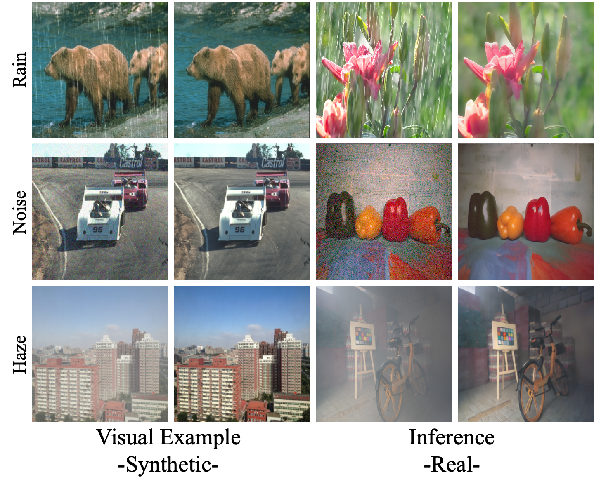

We contend that the capability for diffusion-based editing is not lost but merely hidden from text. We show that similiar visual features like rain patterns and image blur are still recongnized in diffusion visual space even if they are not accesable by text. Through visual examples we can find the correct conditioning to access and manipluate these featuresWe introduce Visual Diffusion Conditioning (VDC), a training-free framework that learns visual conditioning signals directly from visual examples for precise, language-free image editing. Given a paired example—one image with and one without the target effect—VDC derives a visual condition that captures the transformation and steers generation through a novel condition-steering mechanism. An accompanying inversion-correction step mitigates reconstruction errors during DDIM inversion, preserving fine detail and realism. Across diverse tasks, VDC outperforms both training-free and fully fine-tuned text-based editing methods.
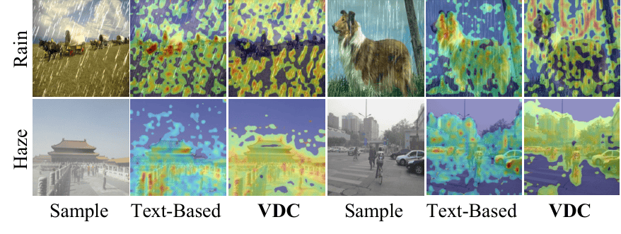
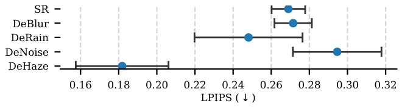
Variance in performance when changing the visual example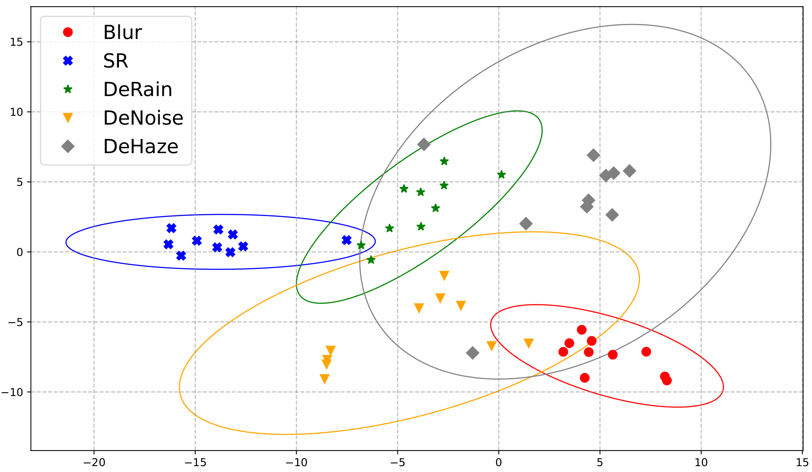
T-SNE visualization of optimized conditions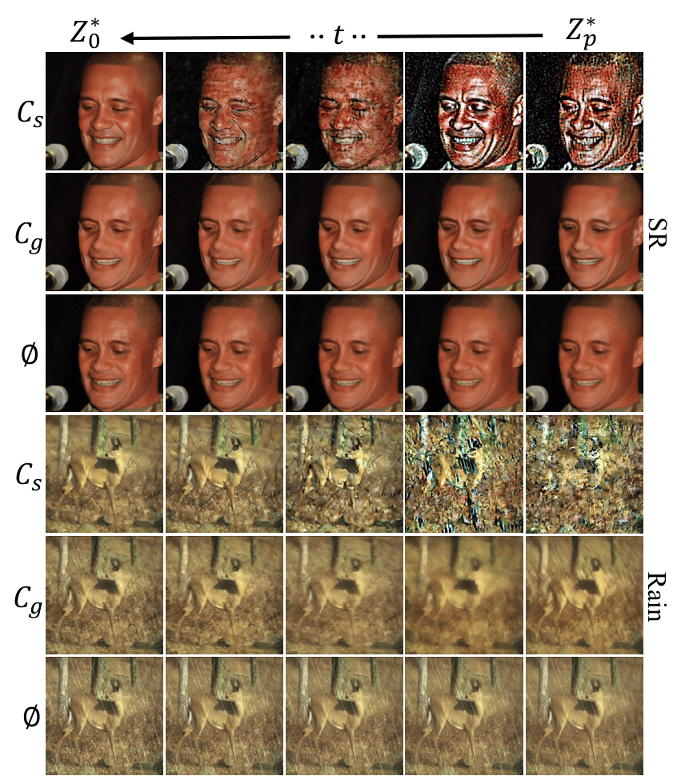
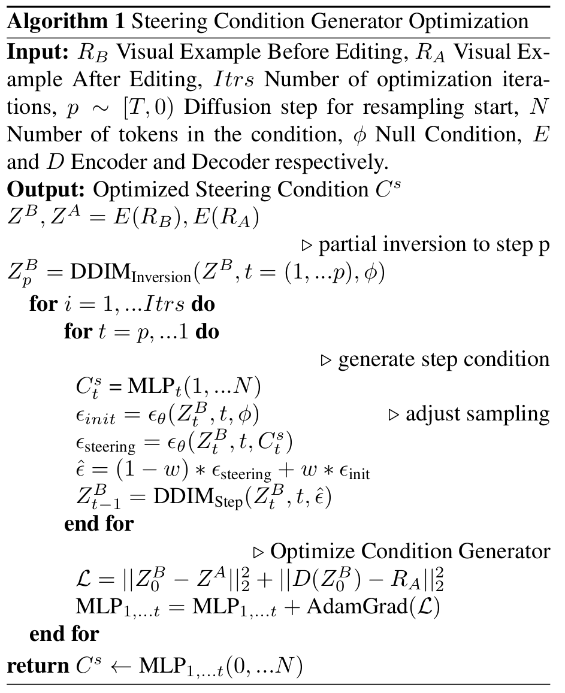
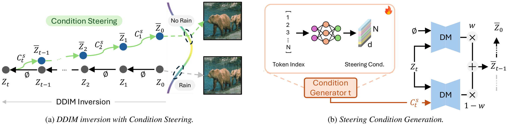
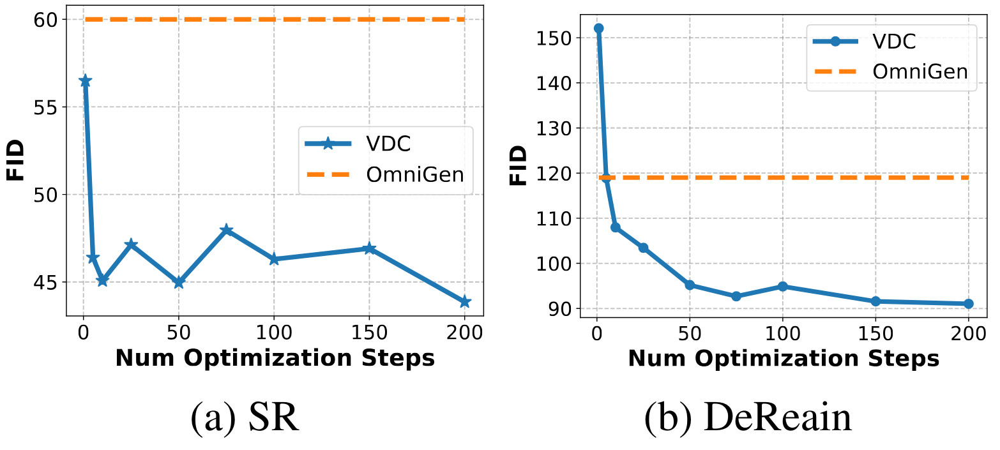
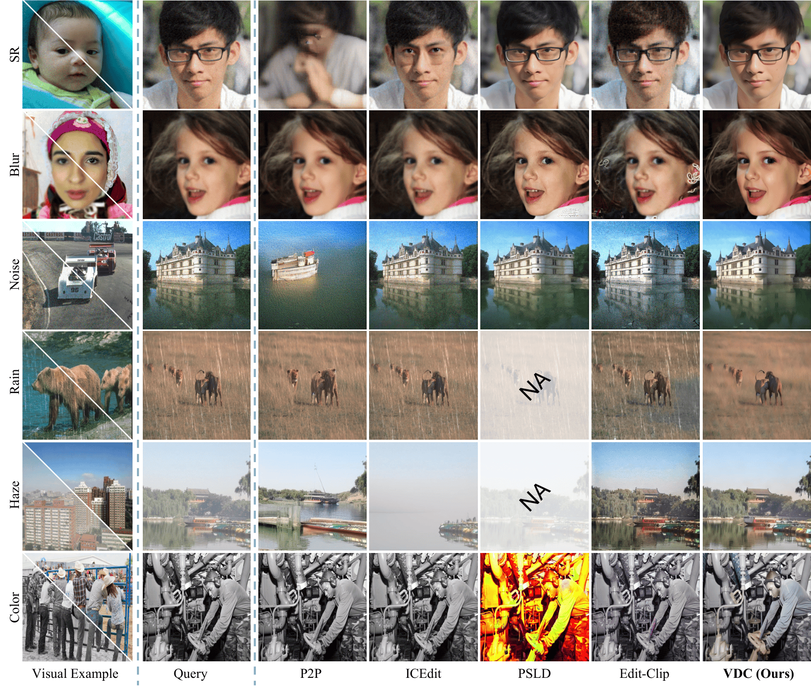
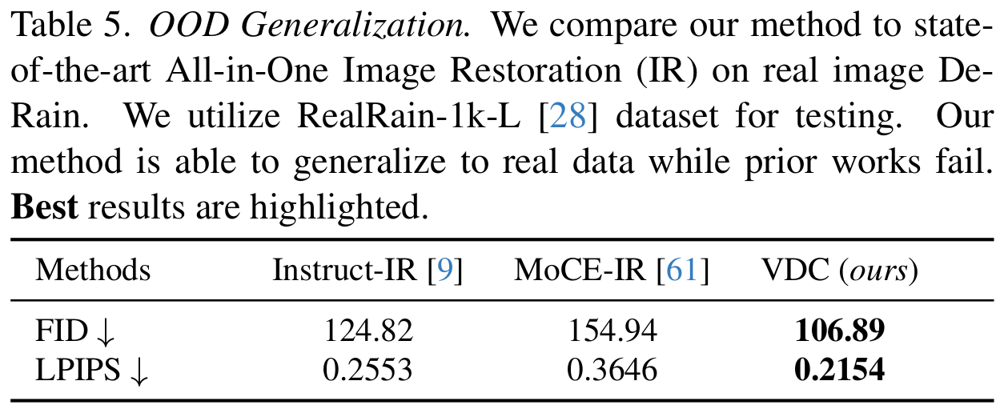
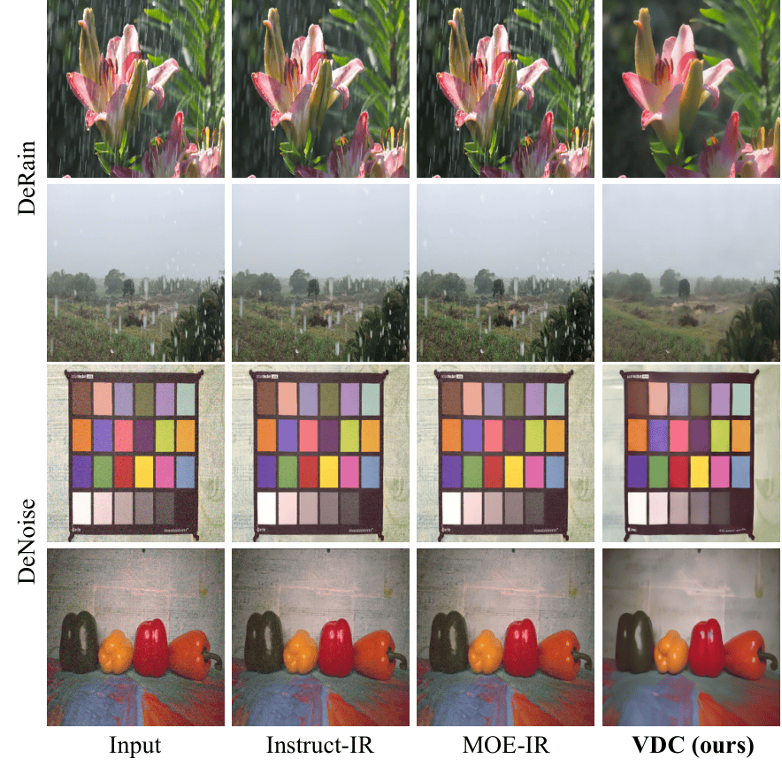
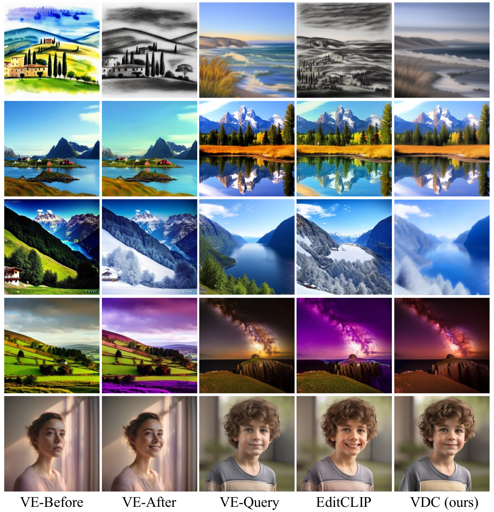
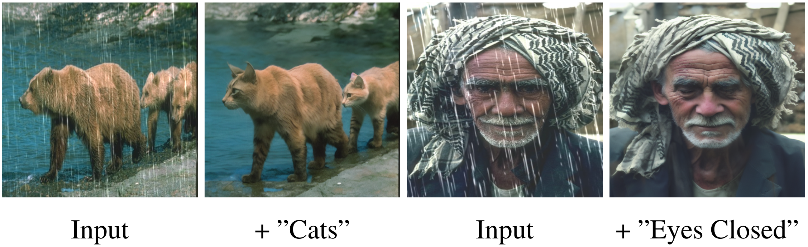